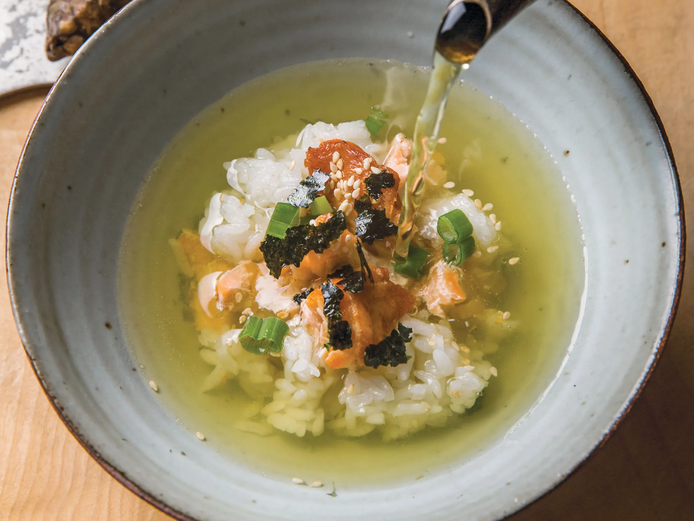

Salmon Ochazuke

Description
This recipe creates ochazuke, using salmon as the main topping.
The recipe is simple, with the only cooking step being cooking the salmon fillet.
Ingredients
- Salmon fillet
- Cooked rice
- Green tea bag
- Water
- Seaweed flakes
Steps
- Season the salmon fillet with some salt. Cook as preferred, until salmon is cooked through. Flake the cooked salmon.
- Boil a cup of water, and steep the green tea bag for a few minutes. You can also add dashi powder to the tea if desired.
- Place some cooked rice into a bowl. Add some of the salmon flakes on top of the rice. Top with seaweed flakes.
- Optionally, add other toppings such as sesame seeds, ikura, or whatever is on hand.
- Pour the green tea over the rice and enjoy.
Home